<!DOCTYPE HTML PUBLIC "-//W3C//DTD HTML 4.0 Transitional//EN">
<html>
<head>
	<meta http-equiv="content-type" content="text/html; charset=utf-8"/>
	<title></title>
	<meta name="generator" content="LibreOffice 6.0.7.3 (Linux)"/>
	<meta name="author" content="Endre Barta"/>
	<meta name="created" content="2019-05-08T10:34:00"/>
	<meta name="changedby" content="Microsoft Office User"/>
	<meta name="changed" content="2019-05-08T10:34:00"/>
	<meta name="AppVersion" content="16.0000"/>
	<meta name="Company" content="University of Debrecen"/>
	<meta name="DocSecurity" content="0"/>
	<meta name="HyperlinksChanged" content="false"/>
	<meta name="LinksUpToDate" content="false"/>
	<meta name="ScaleCrop" content="false"/>
	<meta name="ShareDoc" content="false"/>
	<link href="style.css" rel="stylesheet" type="text/css" />
</head>
<body lang="hu-HU" link="#0000ff" dir="ltr">
<p class="western" style="margin-bottom: 0in; line-height: 100%"><font face="Arial, serif"><span lang="en-US"><b>Tutorial:</b></span></font></p>
<p lang="en-US" class="western" style="margin-bottom: 0in; line-height: 100%"<p class="western" style="margin-bottom: 0in; line-height: 100%"><font face="Arial, serif"><span lang="en-US"><b>Motif
view</b></span></font></p>
<ol>
	<li/>
<p style="margin-bottom: 0in; line-height: 100%"><font color="#00000a"><font face="Cambria, serif"><font face="Arial, serif"><span lang="en-US">To
	guide the user through the different steps of using SummitDB, the
	POU2F2 motif is used as an example because it has a relatively small
	set of overlapping factors. </span></font></font></font>
	</p>
</ol>
<p style="margin-left: 0.5in; margin-bottom: 0in; line-height: 100%"><font color="#00000a"><font face="Cambria, serif"><font face="Arial, serif"><span lang="en-US">Click
on the “Search views” menu and then click the “Motif view”
button. </span></font></font></font>
</p>
<p lang="en-US" style="margin-left: 0.5in; margin-bottom: 0in; line-height: 100%">
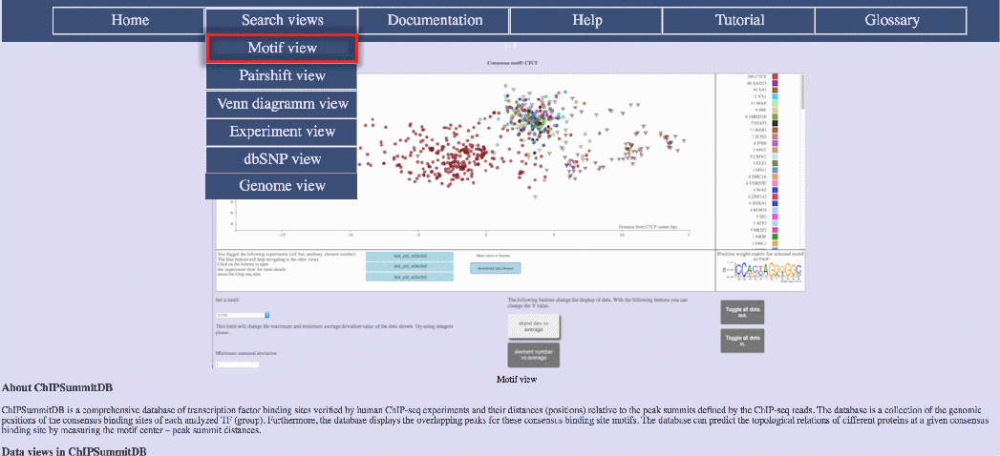
<br/>
</p>
<ol start="2">
	<li/>
<p style="margin-bottom: 0in; line-height: 100%"><font color="#00000a"><font face="Cambria, serif"><font face="Arial, serif"><span lang="en-US">In
	the “Set a motif” dropdown box, select POU2F2. </span></font></font></font>
</p>
</ol>
<p lang="en-US" class="western" style="margin-bottom: 0in; margin-left: 0.5in; line-height: 100%">
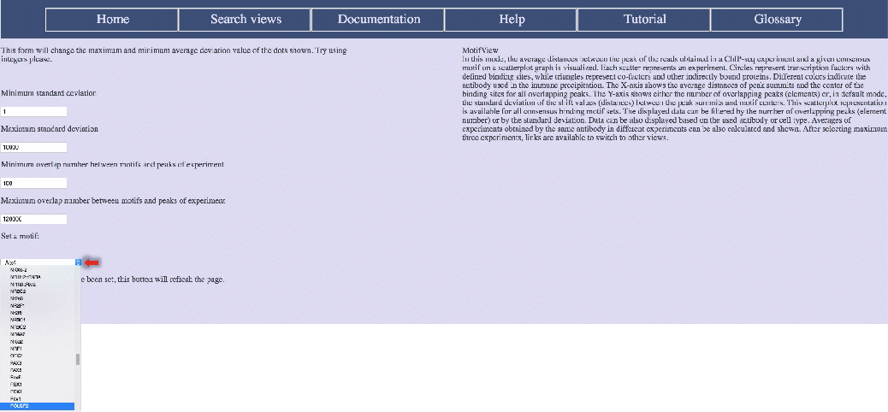
<br/>
</p>
<ol start="3">
	<li/>
<p style="margin-bottom: 0in; line-height: 100%"><font color="#00000a"><font face="Cambria, serif"><font face="Arial, serif"><span lang="en-US">Click
	on the “Go to motif view” button to update the page.</span></font></font></font></p>
</ol>
<p lang="en-US" style="margin-left: 0.5in; margin-bottom: 0in; line-height: 100%">
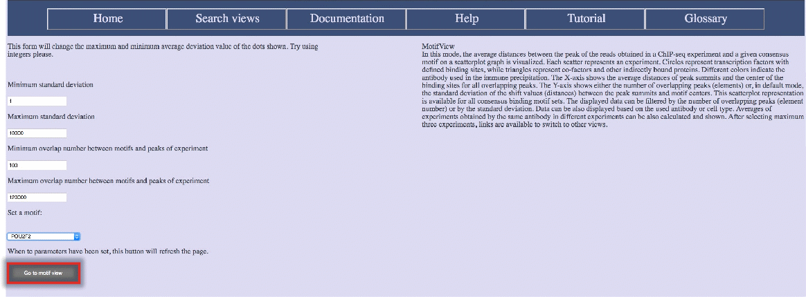
<br/>

</p>
<ol start="4">
	<li/>
<p style="margin-bottom: 0in; line-height: 100%"><font color="#00000a">
	<font face="Cambria, serif"><font face="Arial, serif"><span lang="en-US">After
	updating the page, a scatterplot for the POU2F2 motif can be seen.
	Filter out the experiments, which overlap with POU2F2 less than </span></font><font color="#000000"><font face="Arial, serif"><span lang="en-US">500
	times. To do this, change the default value (100) to 500 in the
	“Minimum overlap number between motifs and peaks of experiment”
	box. Click on the “Refresh page” button to update the
	scatterplot. Only 28 scatter should now be visible.</span></font></font><font face="Arial, serif"><span lang="en-US">
	This means that the identified POU2F2 binding sites overlap with
	peaks from 28 ChIP-seq experiments. However, on the right-hand side
	of the page, only 20 TFs are displayed and labeled with different
	colors. This indicates that the 28 scatters on the plot are from 28
	ChIP-seq experiments (but some experiments have the same protein
	target &gt; 20 different protein). Thus, certain TFs are presented
	in multiple experiments as indicated by the number in the front of
	the TF’s name (for example “5 P300”).</span></font> 
	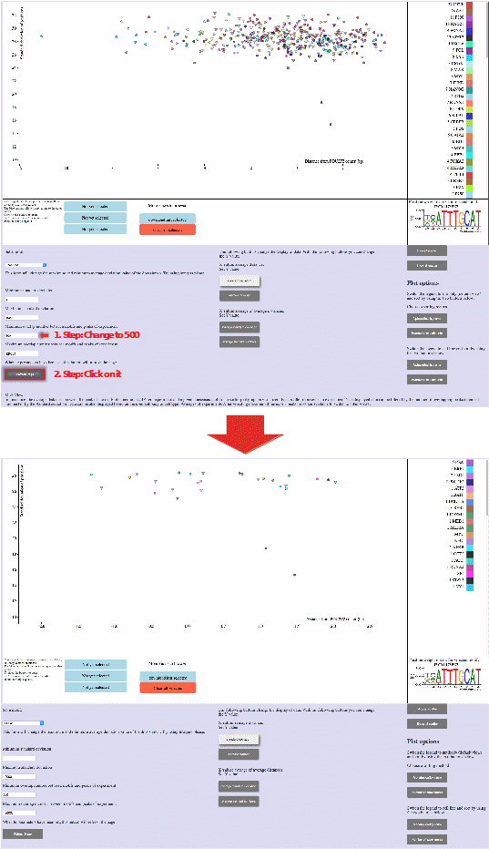
</font></font></p>
</ol>
<p lang="en-US" class="western" style="margin-bottom: 0in; line-height: 100%">
<br/>

</p>
<ol start="5">
	<li/>
<p style="margin-bottom: 0in; line-height: 100%"><font color="#00000a"><font face="Cambria, serif"><font face="Arial, serif"><span lang="en-US">For
	simplicity, investigate the TFs individually. To hide all scatters
	click on the “Hide all scatters” button, which results in an
	empty graph. To undo click on the “Show all scatters” button.
	The user can also display individual data points by selecting the
	TF’s name.</span></font></font></font></p>
</ol>
<p lang="en-US" style="margin-left: 0.5in; margin-bottom: 0in; line-height: 100%">
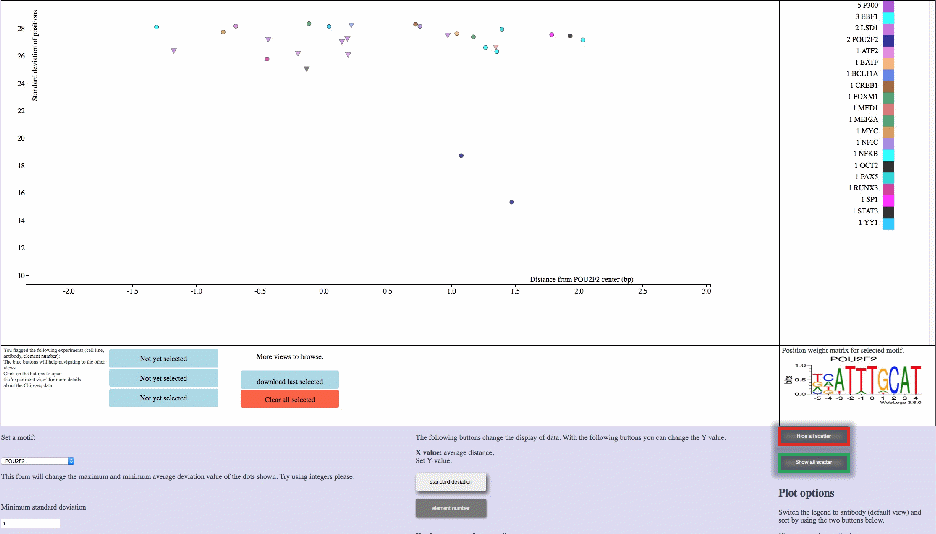
<br/>

</p>
<ol start="6">
	<li/>
<p style="margin-bottom: 0in; line-height: 100%"><font color="#00000a"><font face="Cambria, serif"><font face="Arial, serif"><span lang="en-US">The
	legend in the right-hand side window shows that data from two POU2F2
	ChIP-seq experiments are available. After hiding all scatters, click
	on the purple square next to POU2F2 and two scatters will appear in
	the graph area. </span></font></font></font>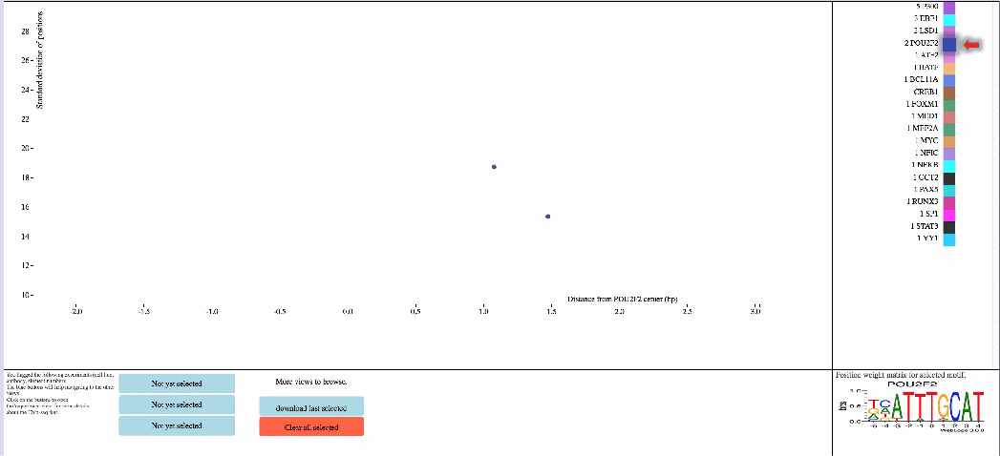

	</p>
</ol>
<p lang="en-US" style="margin-left: 0.5in; margin-bottom: 0in; line-height: 100%">
<br/>

</p>
<ol start="7">
	<li/>
<p style="margin-bottom: 0in; line-height: 100%"><font color="#00000a"><font face="Cambria, serif"><font face="Arial, serif"><span lang="en-US">By
	moving the cursor over any of the two scatters, detailed information
	about the experiment will be displayed at the tool tip. The
	description indicates, that the data is from ChIP-seq experiments in
	which the lymphoblastoid cell lines, GM10847 and GM12878, were used.
	The number of elements is 4179 for cell line GM12878, indicating
	4179 POU2F2-binding motifs in the genome and peaks of the sequenced
	reads (tags) of TF POU2F2 overlap. The tooltip also shows the
	average distance between the peak summits, i.e. the maxima position
	of protein covered regions, and the motif centers, i.e. the central
	base pair of the protein binding DNA motifs, which are fixed
	reference points in the genome. The standard deviation value for the
	average distance is shown also. By comparing the average distances
	from tooltips for different scatters, the position preferences of
	the protein can be elucidated. Regarding the position values of 1.07
	and 1.47 (for the two POU2F2 experiments) in the example, we can
	conclude that POU2F2 covers the DNA downstream of the motif to which
	it binds, and also binds to its own regulatory region. The summit
	positions have relatively low standard deviations (&lt; 20). We
	postulate that direct protein-DNA binding is more stable and less
	mobile than indirect contact, and this leads to the relatively low
	standard deviation values for these binding sites. Here are two more
	examples for the above postulate. When the two POU2F2 scatters are
	displayed, click on the colored square next to P300. Five triangles
	will appear on the plot. It shows that P300 binding preferences are
	located on either side of the zero reference point and their SD is
	higher than POU2F2’s. This suggests that P300 binds indirectly to
	the DNA via POU2F2. Next click on the colored square next to EB1,
	which will bring up two more scatters. Although the binding position
	of EB1 overlaps with that of POU2F2, EB1 has a different binding
	motif. Thus, we hypothesize that both P300 and EB1 bind POU2F2 and
	the complex binds to the binding site of POU2F2.</span></font> </font></font>

	</p>
</ol>
<p lang="en-US" style="margin-left: 0.5in; margin-bottom: 0in; line-height: 100%">
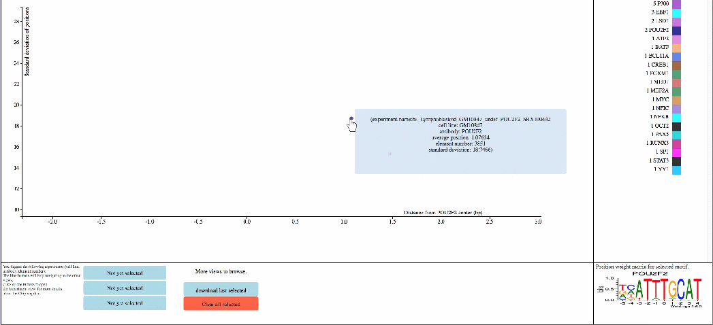
<br/>
</p>
<p class="western" style="margin-bottom: 0in; line-height: 100%"><font face="Arial, serif"><span lang="en-US"><b>Interoperability
between the different views</b></span></font></p>
<p lang="en-US" class="western" style="margin-bottom: 0in; line-height: 100%">
<br/>

</p>
<p class="western" style="margin-bottom: 0in; line-height: 100%"><font face="Arial, serif"><span lang="en-US">The
motif view provides a complex picture of the transcription factor
binding sites and the overlapping ChIP-seq read peaks in an
interactive graph. Scatter on the diagram, represents one particular
ChIP-seq experiment and can be selected by clicking on it.  A maximum
of three scatters can be selected.</span></font><font face="Arial, serif">
</font>
</p>
<p lang="en-US" class="western" style="margin-bottom: 0in; margin-left: 0.5in; line-height: 100%">
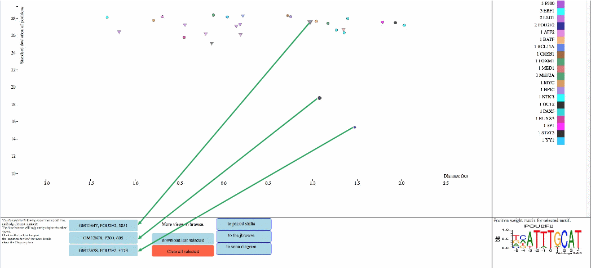
<br/>

</p>
<p class="western" style="margin-bottom: 0in; line-height: 100%"><font face="Arial, serif"><span lang="en-US">After
selecting scatters, certain information (cell line, antibody, and
element number) about the corresponding experiment will appear in the
three boxes under each other below the graph. To view detailed
information there are the following options:</span></font></p>
<ul>
	<li/>
<p style="margin-bottom: 0in; line-height: 100%"><font color="#00000a"><font face="Cambria, serif"><font face="Arial, serif"><span lang="en-US">Clicking
	on the “to pair shift view” button, will open a new window with
	the distance distribution chart of the summit positions of the
	selected experiments, compared to that motif, which was selected in
	the previous step. </span></font></font></font>
	</p>
	<li/>
<p style="margin-bottom: 0in; line-height: 100%"><font color="#00000a"><font face="Cambria, serif"><font face="Arial, serif"><span lang="en-US">To
	browse the genomic locations of the peak-motif co-occurrences in the
	genome browser, click on the “to the jbrowse” button.</span></font></font></font></p>
	<li/>
<p style="margin-bottom: 0in; line-height: 100%"><font color="#00000a"><font face="Cambria, serif"><font face="Arial, serif"><span lang="en-US">To
	see the number of common and specific peak-motif pairs between the
	selected experiments, click on the “to Venn diagram” button. </span></font></font></font>
	</p>
</ul>
<p lang="en-US" class="western" style="margin-bottom: 0in; line-height: 100%">
<br/>

</p>
<p class="western" style="margin-bottom: 0in; line-height: 100%">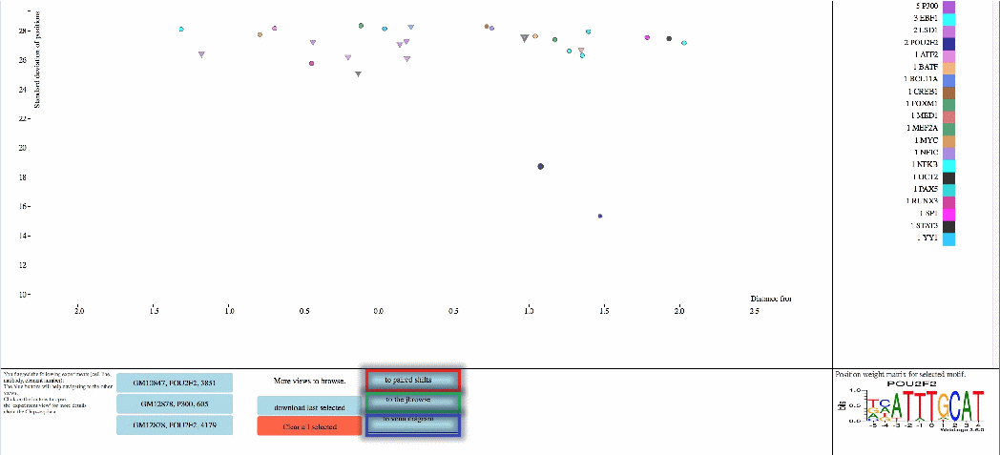
</p>
<p class="western" style="margin-bottom: 0in; line-height: 100%"><font face="Arial, serif"><span lang="en-US">Furthermore,
you can download the intersection of the corresponding motif and the
last selected experiment by clicking on the “download last selected
button”. The selected experiment list can be modified by using the
“Clear all selected” button. This will remove all of the
selections. </span></font>
</p>
<p lang="en-US" class="western" style="margin-bottom: 0in; line-height: 100%">
<br/>

</p>
<p lang="en-US" class="western" style="margin-bottom: 0in; line-height: 100%">
<br/>

</p>
<p class="western" style="margin-bottom: 0in; line-height: 100%"><font face="Arial, serif"><span lang="en-US"><b>Changing
the display of data</b></span></font></p>
<p lang="en-US" class="western" style="margin-bottom: 0in; line-height: 100%">
<br/>

</p>
<p class="western" style="margin-bottom: 0in; line-height: 100%"><font face="Arial, serif"><span lang="en-US">The
middle and the right-hand side panel of options stand for the
modification of the data display. </span></font>
</p>
<p class="western" style="margin-bottom: 0in; line-height: 100%">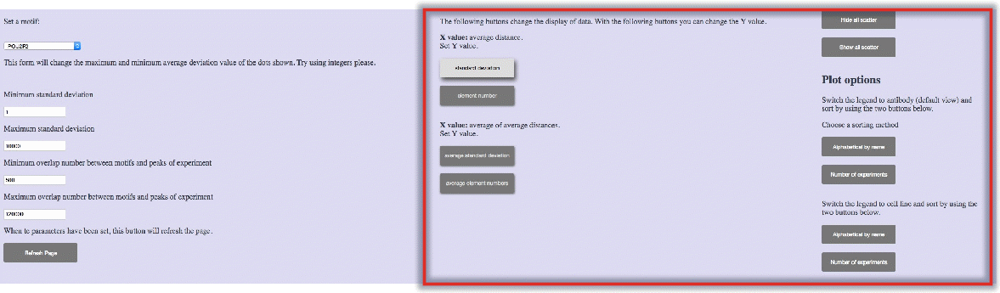
</p>
<p class="western" style="margin-bottom: 0in; line-height: 100%"><font face="Arial, serif"><span lang="en-US">In
the middle, the first two buttons allows the user to the Y value,
which will toggle between two states: standard deviation and element
number. For further information please check the Help menu. The
default setting is the standard deviation. </span></font>
</p>
<p lang="en-US" class="western" style="margin-bottom: 0in; line-height: 100%">
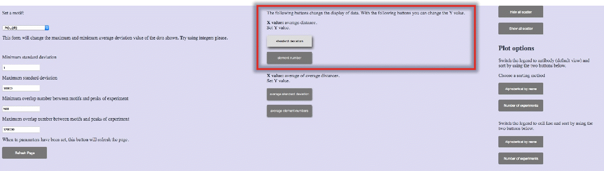
<br/>
</p>
<ol>
	<li/>
<p style="margin-bottom: 0in; line-height: 100%"><font color="#00000a"><font face="Cambria, serif"><font face="Arial, serif"><span lang="en-US">Click
	on the “element number” to display the motif- experiment peak
	overlap number as a Y value. </span></font>
</font></font></p>
</ol>
<p lang="en-US" class="western" style="margin-bottom: 0in; margin-left: 0.5in; line-height: 100%">
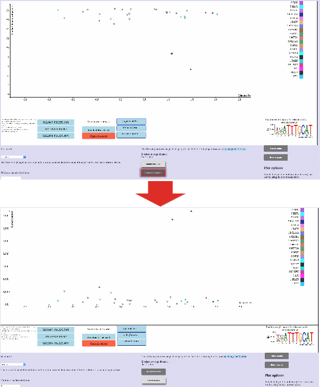
<br/>

</p>
<p class="western" style="margin-bottom: 0in; line-height: 100%"><font face="Arial, serif"><span lang="en-US">The
page will update and reorder the scatters of experiments depending on
the overlap number between ChIP-seq peaks and POU2F2 motifs. Two
POU2F2 ChIP-seq data have the highest overlap number of ~4000 POU2F2
binding sites. To find detailed information hover over one of the
scatter, which will show the accurate element number and other
information. The POU2F2 ChIP-seq derived from GM10847 cell line has
3851 peaks, which co-located with POU2F2 motifs. </span></font>
</p>
<p lang="en-US" class="western" style="margin-bottom: 0in; line-height: 100%">
<br/>

</p>
<p class="western" style="margin-bottom: 0in; line-height: 100%"><font face="Arial, serif"><span lang="en-US">The
unification step averages the average summit positions, the average
standard deviations, and the element numbers obtained from different
experiments. To display the unification calculations, the user can
choose between “average standard deviation vs. average of average
positions” or “average element numbers vs. average of average
positions” buttons.</span></font><font face="Arial, serif"> </font>
</p>
<p lang="en-US" class="western" style="margin-bottom: 0in; line-height: 100%">
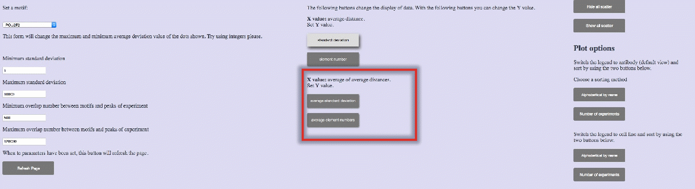
<br/>
</p>
<ol start="2">
	<li/>
<p style="margin-bottom: 0in; line-height: 100%"><font color="#00000a"><font face="Cambria, serif"><font face="Arial, serif"><span lang="en-US">Click
	on the “average standard deviation vs average of average
	positions” button. </span></font></font></font>
	</p>
</ol>
<p class="western" style="margin-bottom: 0in; line-height: 100%">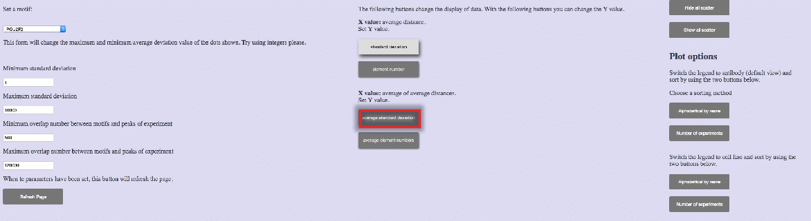
</p>
<p class="western" style="margin-bottom: 0in; line-height: 100%"><font face="Arial, serif"><span lang="en-US">This
step will combine the values of ChIP-seq experiments (with similar
antibodies) and create a new plot, where the y value is the average
standard deviations.</span></font><font face="Arial, serif"><font size="4" style="font-size: 14pt"><b>
 </b></font></font>
</p>
<p class="western" style="margin-bottom: 0in; line-height: 100%">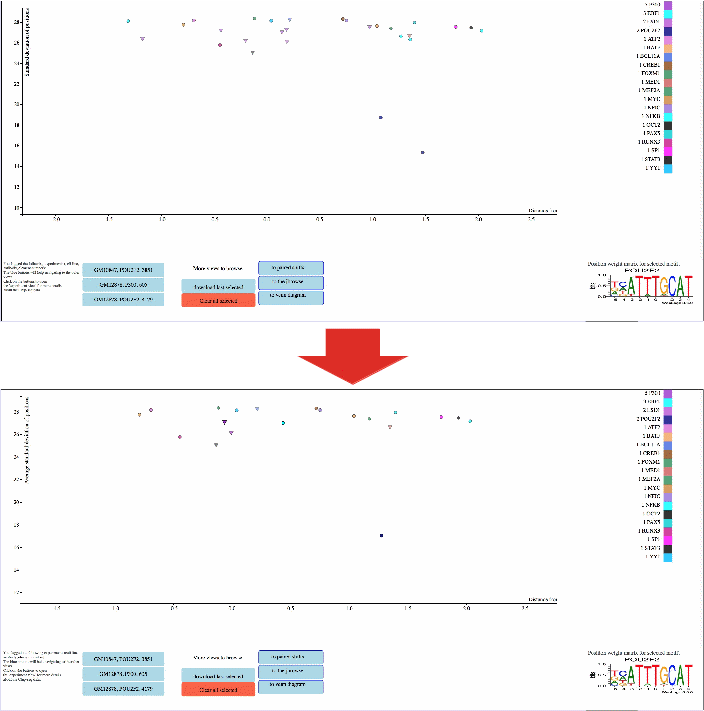
</p>
<p lang="en-US" class="western" style="margin-bottom: 0in; line-height: 100%">
<br/>

</p>
<p class="western" style="margin-bottom: 0in; line-height: 100%"><font face="Arial, serif"><span lang="en-US">Only
one dot corresponds to each antibody, which shows the average values
of its corresponding experiments. </span></font>
</p>
<p lang="en-US" class="western" style="margin-bottom: 0in; line-height: 100%">
<br/>

</p>
<p class="western" style="margin-bottom: 0in; line-height: 100%"><font face="Arial, serif"><span lang="en-US">The
buttons on the right-hand side modify the order and the content of
labels. </span></font>
</p>
<p lang="en-US" class="western" style="margin-bottom: 0in; line-height: 100%">
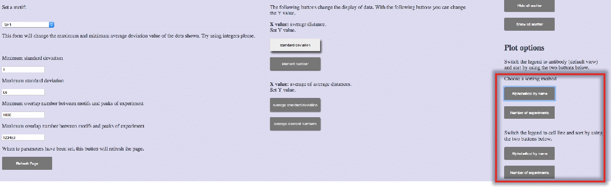
<br/>

</p>
<p class="western" style="margin-bottom: 0in; line-height: 100%"><font face="Arial, serif"><span lang="en-US">The
first two buttons sort the antibodies according to their names
(alphabetically) or the number of experiments. </span></font>
</p>
<p class="western" style="margin-bottom: 0in; line-height: 100%">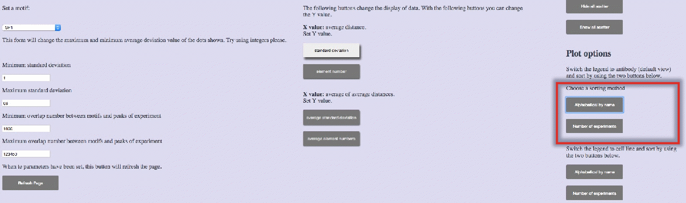
</p>
<p class="western" style="margin-bottom: 0in; line-height: 100%"><font face="Arial, serif"><span lang="en-US">Choosing
the last two buttons will modify the labels. The antibody names will
be replaced with cell type names. Following the logic of the previous
buttons, the experiment can be sorted by name of the cell line or the
number of their occurrences.</span></font></p>
<p class="western" style="margin-bottom: 0in; line-height: 100%">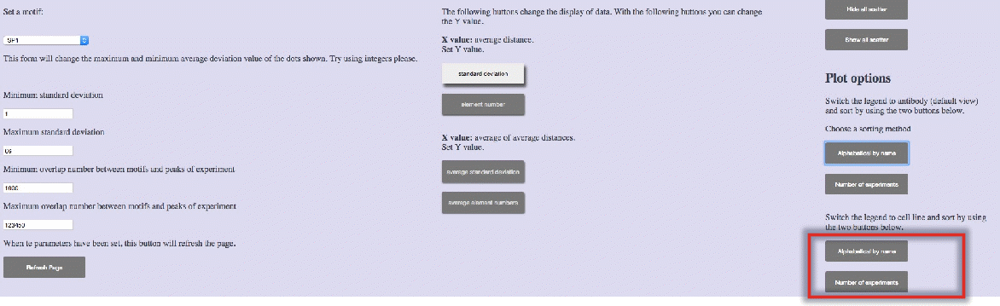
</p>
<p lang="en-US" class="western" align="center" style="margin-bottom: 0in; line-height: 100%">
<br/>

</p>
<p class="western" style="margin-bottom: 0in; line-height: 100%">
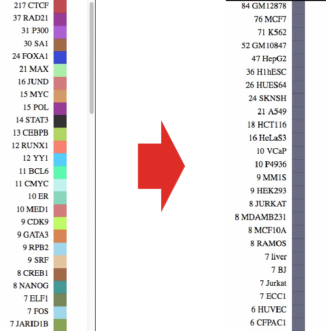
</p>
<p class="western" style="margin-bottom: 0in; line-height: 100%; page-break-before: always">
<font face="Arial, serif"><span lang="en-US"><b>Pair Shift view</b></span></font></p>
<p class="western" style="margin-bottom: 0in; line-height: 100%"><font face="Arial, serif"><span lang="en-US">To
introduce this tool, the relation between the CTCF motif and its
corresponding summits from two experiments from the MCF7 cell line
will be shown as an example.  </span></font>
</p>
<p lang="en-US" class="western" style="margin-bottom: 0in; line-height: 100%">
<br/>

</p>
<ol>
	<li/>
<p style="margin-bottom: 0in; line-height: 100%"><font color="#00000a"><font face="Cambria, serif"><font face="Arial, serif"><span lang="en-US">Move
	the cursor over the “Search views” menu and click on the “Pair
	shift view“ button. </span></font></font></font>
	</p>
</ol>
<p lang="en-US" class="western" style="margin-bottom: 0in; margin-left: 0.5in; line-height: 100%">
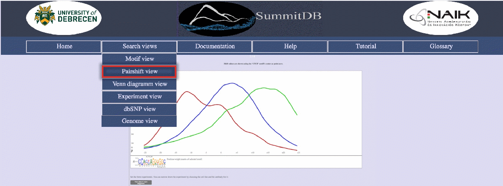
<br/>

</p>
<ol start="2">
	<li/>
<p style="margin-bottom: 0in; line-height: 100%"><font color="#00000a"><font face="Cambria, serif"><font face="Arial, serif"><span lang="en-US">Select
	the CTCF motif under “Set a motif”. </span></font></font></font>
	</p>
</ol>
<p lang="en-US" style="margin-left: 0.5in; margin-bottom: 0in; line-height: 100%">
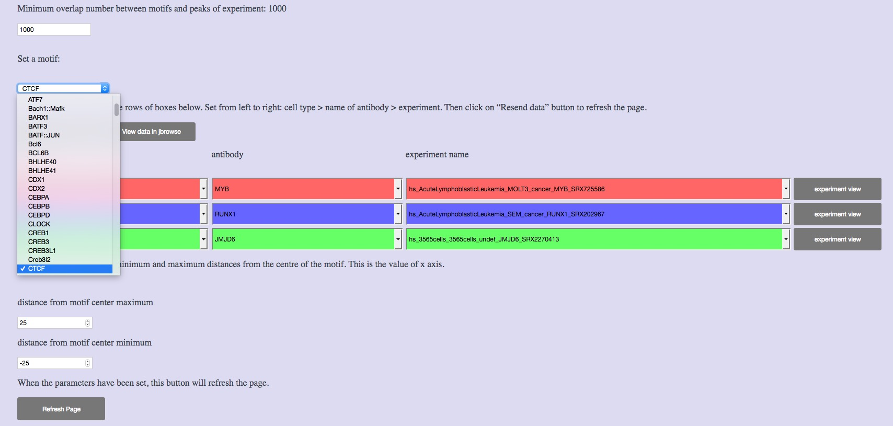
<br/>

</p>
<ol start="3">
	<li/>
<p style="margin-bottom: 0in; line-height: 100%"><font color="#00000a"><font face="Cambria, serif"><font face="Arial, serif"><span lang="en-US">Click
	on the first upper left (red) dropdown box and select the “MCF7”
	cell type from the list. Click on the second box from the left in
	the row, and select CTCF from the list. In the third red box, select
	the name of the following experiment:
	“hs_BreastAdenocarcinoma_MCF7_cancer_CTCF_SRX1091824”.</span></font>
	</font></font>
	</p>
</ol>
<p lang="en-US" style="margin-left: 0.5in; margin-bottom: 0in; line-height: 100%">
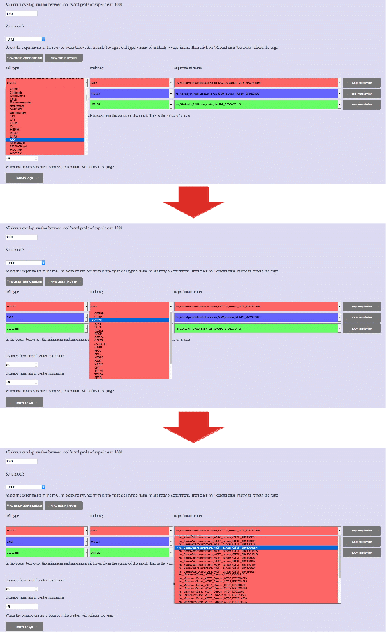
<br/>

</p>
<ol start="4">
	<li/>
<p style="margin-bottom: 0in; line-height: 100%"><font color="#00000a">
	<font face="Cambria, serif"><font face="Arial, serif"><span lang="en-US">In
	the next (blue) row of boxes, repeat the previous steps, but select
	RAD21 as the antibody and
	“hs_BreastAdenocarcinoma_MCF7_cancer_RAD21_ERX004452” as the
	experiment name.</span></font></font></font></p>
</ol>
<p lang="en-US" class="western" style="margin-bottom: 0in; line-height: 100%">
<br/>

</p>
<ol start="5">
	<li/>
<p style="margin-bottom: 0in; line-height: 100%"><font color="#00000a"><font face="Cambria, serif"><font face="Arial, serif"><span lang="en-US">After
	setting the parameters, click on the “Refresh Page” button.</span></font>
	</font></font><span class="sd-abs-pos" style="width: 554px"></span>
	</p>
</ol>
<p lang="en-US" style="margin-left: 0.5in; margin-bottom: 0in; line-height: 100%">
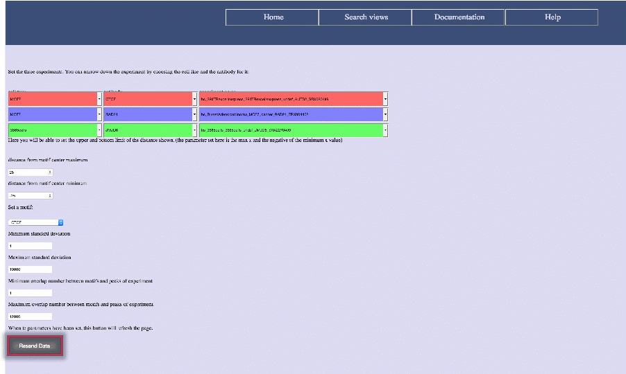

<br/>

</p>
<ol start="6">
	<li/>
<p style="margin-bottom: 0in; line-height: 100%"><font color="#00000a">
	<font face="Cambria, serif"><font face="Arial, serif"><span lang="en-US">The
	page will refresh in a new window and a diagram will be displayed.
	The color of the curves corresponds to the colors of the boxes used
	for settings. If the curves do not fit inside the diagram, then
	adjust the minimum and maximum values of the axes below the graph.</span></font></font></font></p>
</ol>
<p style="margin-left: 0.5in; margin-bottom: 0in; line-height: 100%"><font color="#00000a">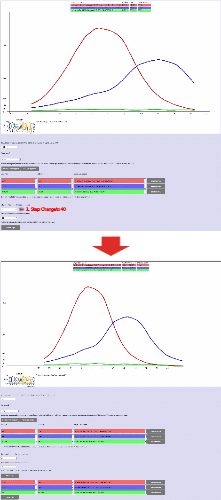
</font></p>
<p class="western" style="margin-left: 0.5in; margin-bottom: 0in; line-height: 100%">
<font face="Arial, serif"><span lang="en-US">The page will be updated
and the modified diagram will be displayed. </span></font>
</p>
<p style="margin-left: 0.5in; margin-bottom: 0in; line-height: 100%"><font color="#00000a"><font face="Cambria, serif"><font face="Arial, serif"><span lang="en-US">On
the plot, the red curve (CTCF) is shifted towards the left-hand side
of the center of the CTCF motif, with a peak around position -5. In
contrast, the RAD21 peak is shifted to the 3’ direction of the
motif and has a local maxima around position 15. Based on these
observations, it can be assumed that the fine positional shifts that
may exist between the contact points of cohesin proteins (CTCF,
RAD21, SMC1/3, and STAG1/2) might reflect the 3D position of the
components within the complex. </span></font></font></font>
</p>
<p style="margin-left: 0.5in; margin-bottom: 0in; line-height: 100%"><font color="#00000a"><font face="Cambria, serif"><font face="Arial, serif"><span lang="en-US">Explanation:
Since CTCF is the only known specific DNA binder among the components of the CTCF/cohesin complex, we expected that the corrisponding ChIP-seq peaks will point to the same position with respect to CTCF motif. In
contrast the fact that we can observe a positional shift suggests that RAD21 oriteuns occupy conserved - relatively fixed - positions that are close enough to the DNA, so as to allow DNA-protein cosslinks to form
during the ChIP-seq procedure.
</span></font></font></font>
</p>
<p style="margin-left: 0.5in; margin-bottom: 0in; line-height: 100%"><font color="#00000a"><font face="Cambria, serif"><font color="#000000"><font face="Arial, serif"><span lang="en-US">The
JARID1B is known as a histone demethylase enzyme. A high fraction of
JARID1B peaks overlap with CTCF binding sites in basal breast cancer
cells </span></font></font><font color="#000000"><font face="Arial, serif"><span lang="en-US">(Yamamoto
et al., 2014)</span></font></font><font color="#000000"><font face="Arial, serif"><span lang="en-US">.
The relationship between these two factors has been investigated, as
well as their relative effects on each other. According to the
knock-down experiments, they found clear evidence for CTCF-JARID1B
interactions, which suggests that the two proteins are present in the
same complex.</span></font></font> </font></font>
</p>
<p style="margin-left: 0.5in; margin-bottom: 0in; line-height: 100%"><font color="#00000a">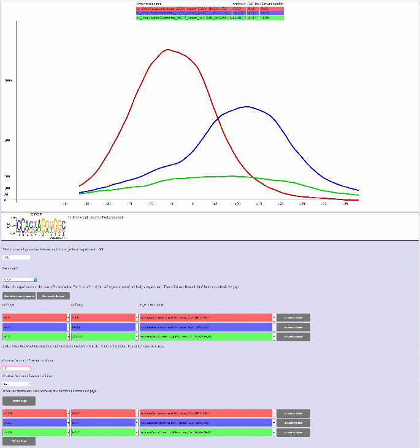
</font></p>
<ol start="7">
	<li/>
<p style="margin-top: 0.19in; margin-bottom: 0in; line-height: 100%">
	<font color="#00000a"><font color="#000000"><font face="Arial, serif"><span lang="en-US">When
	JARID1B and “hs_BreastAdenocarcinoma_MCF7_cancer_JARID1B_SRX265412”
	are selected in the third row of green boxes, a flat and broad green
	curve for the third experiment appears in “Pair shift view”,
	indicating frequent CTCF-JARID1B co-appearance. Consequently, the
	standard deviation of the positions for the JARID1B curve is higher
	(20.55), than that of the other two curves. This indicates that the
	interaction between the CTCF&#8209;binding motif and the JARID1B
	protein is very likely not direct, the protein occupies the binding
	sites via several other proteins.</span></font></font></font></p>
	<li/>
<p style="margin-top: 0.19in; margin-bottom: 0.19in; line-height: 100%">
	<font color="#00000a"><font face="Arial, serif"><span lang="en-US">Use
	the second panel, if you want to start the experiment selection with
	the name of the antibody. This panel is similar to the previous with
	a slight difference, the “cell type “ and “antibody” columns
	are switched. </span></font></font>
	</p>
</ol>
<p style="margin-left: 0.5in; margin-top: 0.19in; margin-bottom: 0.19in; line-height: 100%">
<font color="#00000a">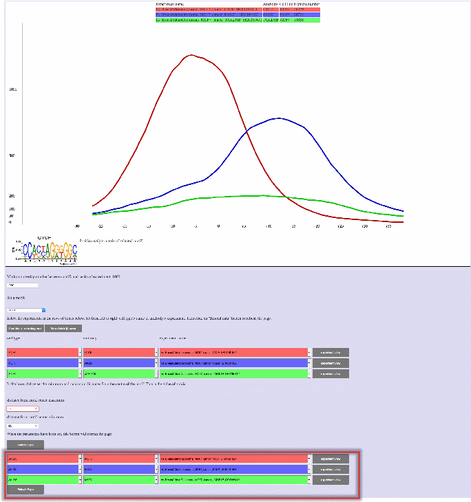
</font></p>
<p class="western" style="margin-bottom: 0in; line-height: 100%"><font face="Arial, serif"><span lang="en-US"><b>dbSNP
view</b></span></font></p>
<p lang="en-US" class="western" style="margin-bottom: 0in; line-height: 100%">
<br/>

</p>
<ol>
	<li/>
<p style="margin-bottom: 0in; line-height: 100%"><font color="#00000a"><font face="Cambria, serif"><font face="Arial, serif"><span lang="en-US">Users
	can find motifs which overlap with known nucleotide variations. The
	database contains dbSNP entries. This tutorial will demonstrate how
	to perform this action.</span></font></font></font></p>
</ol>
<p style="margin-left: 0.5in; margin-bottom: 0in; line-height: 100%"><font color="#00000a"><font face="Cambria, serif"><font face="Arial, serif"><span lang="en-US">Click
on the “Search views” menu and then click the “dbSNP view”
button. </span></font></font></font>
</p>
<p style="margin-bottom: 0in; line-height: 100%"><font color="#00000a">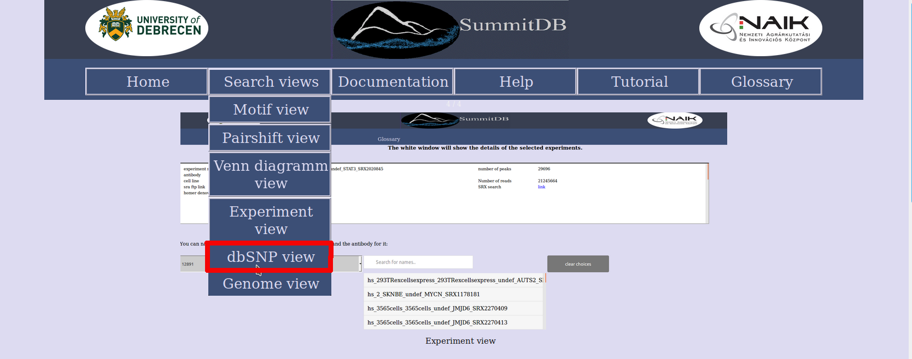
</font></p>
<ol start="2">
	<li/>
<p style="margin-bottom: 0in; line-height: 100%"><font color="#00000a"><font face="Cambria, serif"><font face="Arial, serif"><span lang="en-US">There
	are two ways to find overlapping SNPs. The first one is to specify
	the dbSNP ID itself. Write “</span></font><font color="#000000"><font face="Arial, serif"><span lang="en-US">rs1193185173”
	in the dbSNP search box, then click “Send”.</span></font></font><font face="Arial, serif"><span lang="en-US">
	</span></font>
</font></font></p>
</ol>
<p>
	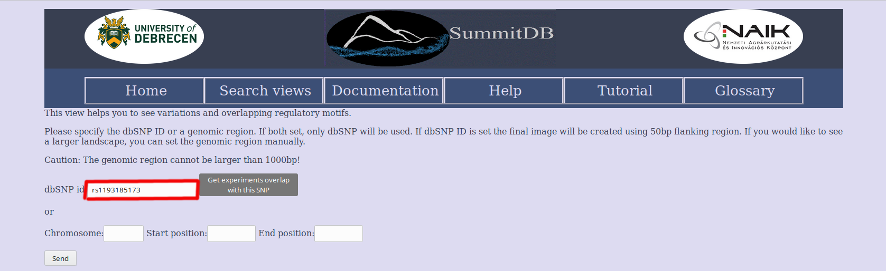
</p>
<ol start="3">
	<li/>
<p style="margin-bottom: 0in; line-height: 100%"><font color="#00000a"><font face="Cambria, serif"><font face="Arial, serif"><span lang="en-US">Now
	a chromosomic view is displayed with all the SNPs and motifs. You
	can click on the motif logo and the browser immediately goes to the
	Motif view. You can also click on the SNPs to see details of the
	selected variation in a new window. You can also switch off SNPs not
	overlapping with any motifs.</span></font> </font></font>
	</p>
</ol>
<p lang="en-US" class="western" style="margin-bottom: 0in; line-height: 100%">
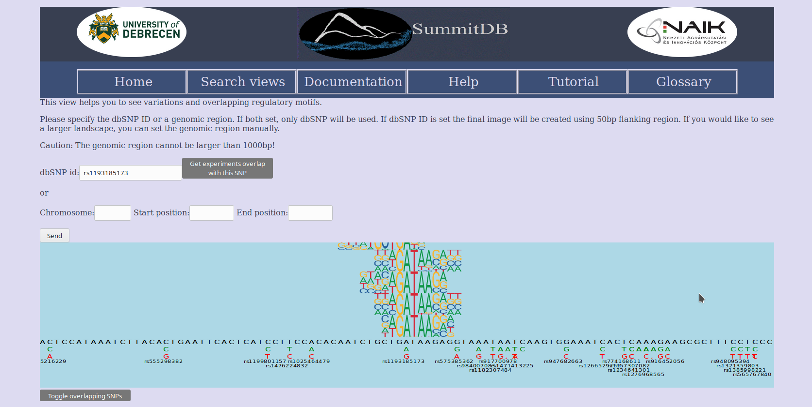
<br/>

</p>
<ol start="4">
	<li/>
<p style="margin-bottom: 0in; line-height: 100%"><font color="#00000a"><font face="Cambria, serif"><font face="Arial, serif"><span lang="en-US">This
	view is limited to 100 bp only. The user may want to see a larger
	genomic landscape. To perform this action, set the chromosome to 10,
	Start position to 711630, and End position to 711888. Remove the
	text from the dbSNP box. If dbSNP is set, the website will not set
	the other fields. Remark: the genomic region cannot be larger than
	1000 bp. If every setting is correct, click “Send”.</span></font>
	</font></font>
	</p>
</ol>
<p style="margin-bottom: 0in; line-height: 100%"><font color="#00000a">
</font></p>
<ol start="5">
	<li/>
<p style="margin-bottom: 0in; line-height: 100%"><a name="_GoBack"></a>
	<font color="#00000a"><font face="Cambria, serif"><font face="Arial, serif"><span lang="en-US">The
	user can now see all the motifs and variations in the region.
	Clicking on the motifs will switch to the Motif view. The
	overlapping SNPs are red. Clicking on them has a similar effect as
	if the user specified the SNP id in the website. The non-overlapping
	SNPs are blue and clicking on them will display details about the
	SNP.</span></font> 
</font></font></p>
</ol>
<p>
	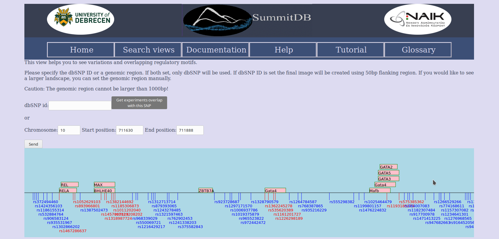
</p>
<p class="western" style="margin-bottom: 0in; line-height: 100%"><font face="Arial, serif"><span lang="en-US"><b>Experiment
view</b></span></font></p>
<p class="western" style="margin-bottom: 0in; line-height: 100%"><font face="Arial, serif"><span lang="en-US">The
processed ChIP-seq experiment’s attributes can be browsed in this
view. </span></font>
</p>
<ol>
	<li/>
<p style="margin-bottom: 0in; line-height: 100%"><font color="#00000a"><font face="Cambria, serif"><font face="Arial, serif"><span lang="en-US">Move
	the cursor over the “Search views” menu and click on the
	“Experiment view“ button.</span></font></font></font></p>
</ol>
<ol start="2">
	<li/>
<p style="margin-bottom: 0in; line-height: 100%"><font color="#00000a"><font face="Cambria, serif"><font face="Arial, serif"><span lang="en-US">You
	can select a given experiment from the list using the dropdown
	boxes, which are similar to the Pair shift view panels. Click on the
	left dropdown box and select the “MCF7” cell type from the list.
	Click on the second box from the left in the row, and select CTCF
	from the list. In the third box click on the
	“hs_BreastAdenocarcinoma_MCF7_cancer_CTCF_SRX1091824”
	experiment.</span></font></font></font></p>
</ol>
<ol start="3">
	<li/>
<p style="margin-bottom: 0in; line-height: 100%"><font color="#00000a">
	<font face="Cambria, serif"><font face="Arial, serif"><span lang="en-US">After
	the page refreshes, you can read the attributes of each experiment.
	The following attributes can be found:</span></font></font></font></p>
	<ol type="a">
		<li/>
<p style="margin-bottom: 0in; line-height: 100%"><font color="#00000a"><font face="Cambria, serif"><font face="Arial, serif"><span lang="en-US">Experiment
		name: Name of ChIP-seq data according to our nomenclature:
		“Organism (hs- Homo sapiens) _ “Tissue name” _ “Cell type”
		_ “Cell line type” _ “Antibody name” _ “SRA ID”</span></font></font></font></p>
		<li/>
<p style="margin-bottom: 0in; line-height: 100%"><font color="#00000a"><font face="Cambria, serif"><font face="Arial, serif"><span lang="en-US">Antibody:
		name of ChIP-seq target protein.</span></font></font></font></p>
		<li/>
<p style="margin-bottom: 0in; line-height: 100%"><font color="#00000a"><font face="Cambria, serif"><font face="Arial, serif"><span lang="en-US">Cell
		line: Name or code of cell type</span></font></font></font></p>
		<li/>
<p style="margin-bottom: 0in; line-height: 100%"><font color="#00000a"><font face="Cambria, serif"><font face="Arial, serif"><span lang="en-US">Sra
		ftp link: Link to directly download raw SRA file in .sra format. </span></font></font></font>
		</p>
		<li/>
<p style="margin-bottom: 0in; line-height: 100%"><font color="#00000a"><font face="Cambria, serif"><font face="Arial, serif"><span lang="en-US">Homer
		de novo motif: The htp report of the homer de novo motif scan under
		corresponding peak regions.</span></font></font></font></p>
		<li/>
<p style="margin-bottom: 0in; line-height: 100%"><font color="#00000a"><font face="Cambria, serif"><font face="Arial, serif"><span lang="en-US">Genome
		view: link to browse the peak region in Jbrowse genome viewer.</span></font></font></font></p>
		<li/>
<p style="margin-bottom: 0in; line-height: 100%"><font color="#00000a"><font face="Cambria, serif"><font face="Arial, serif"><span lang="en-US">Number
		of peaks: Number of peaks from the HOMER peak calling analysis.</span></font></font></font></p>
		<li/>
<p style="margin-bottom: 0in; line-height: 100%"><font color="#00000a"><font face="Cambria, serif"><font face="Arial, serif"><span lang="en-US">Link
		to motif view if antibody and consensus motif is the same: This
		link can be used for transcription factors, which have identified
		JASPAR CORE consensus motif set. This link navigates to the
		corresponding motif’s Motif view.</span></font></font></font></p>
		<li/>
<p style="margin-bottom: 0in; line-height: 100%"><font color="#00000a"><font face="Cambria, serif"><font face="Arial, serif"><span lang="en-US">Number
		of reads: Raw sequence data reads</span></font></font></font></p>
		<li/>
<p style="margin-bottom: 0in; line-height: 100%"><font color="#00000a"><font face="Cambria, serif"><font face="Arial, serif"><span lang="en-US">SRX
		search: link to the SRA report about the experiment.</span></font></font></font></p>
		<li/>
<p style="margin-bottom: 0in; line-height: 100%"><font color="#00000a"><font face="Cambria, serif"><font face="Arial, serif"><span lang="en-US">Overlapping
		motifs: List of motifs which are occupied by peaks for a given
		ChIP-seq. The second column represents the number of
		co-occurrences. The motif names are hyperlinks which direct the
		user to the Motif view. </span></font></font></font>
		</p>
	</ol>
</ol>
<p class="western" style="margin-bottom: 0in; line-height: 100%; page-break-before: always">
<font face="Arial, serif"><span lang="en-US"><b>Venn diagram view</b></span></font></p>
<p class="western" style="margin-bottom: 0in; line-height: 100%"><font face="Arial, serif"><span lang="en-US">You
can display the frequency of common and specific peaks for selected
experiments at a consensus motif binding site in the Venn diagram
view.  </span></font>
</p>
<ol>
	<li/>
<p style="margin-bottom: 0in; line-height: 100%"><font color="#00000a"><font face="Cambria, serif"><font face="Arial, serif"><span lang="en-US">Move
	the cursor over the “Search views” menu and click on the “Venn
	diagram view” button.</span></font></font></font></p>
</ol>
<p lang="en-US" style="margin-left: 0.5in; margin-bottom: 0in; line-height: 100%">
<br/>

</p>
<ol start="2">
	<li/>
<p style="margin-bottom: 0in; line-height: 100%"><font color="#00000a"><font face="Cambria, serif"><font face="Arial, serif"><span lang="en-US">We
	will use the CTCF motif as an example. Under “Set a motif”,
	click on the drop down box and select “CTCF” from the list. </span></font></font></font>
	</p>
</ol>
<ol start="3">
	<li/>
<p style="margin-bottom: 0in; line-height: 100%"><font color="#00000a"><font face="Cambria, serif"><font face="Arial, serif"><span lang="en-US">Below
	the motif selection, click on the first upper left (red) dropdown
	box and select the “MCF7” cell type from the list. Click on the
	second box from the left in the row, and select CTCF from the list.
	In the third red box select the name of the experiment to
	“hs_BreastAdenocarcinoma_MCF7_cancer_CTCF_SRX1091824”.</span></font></font></font></p>
</ol>
<ol start="4">
	<li/>
<p style="margin-bottom: 0in; line-height: 100%"><font color="#00000a"><font face="Cambria, serif"><font face="Arial, serif"><span lang="en-US">In
	the next (blue) row of boxes, repeat the previous steps, but select
	RAD21 as the antibody and
	“hs_BreastAdenocarcinoma_MCF7_cancer_RAD21_ERX004452” as the
	experiment name.</span></font></font></font></p>
</ol>
<ol start="5">
	<li/>
<p style="margin-bottom: 0in; line-height: 100%"><font color="#00000a"><font face="Cambria, serif"><font face="Arial, serif"><span lang="en-US">In
	the third (green) row, select MC7 as the cell type and JARID1B as
	the antibody. In the third box, choose
	</span></font><font color="#000000"><font face="Arial, serif"><span lang="en-US">“hs_BreastAdenocarcinoma_MCF7_cancer_JARID1B_SRX265412”
	</span></font></font><font face="Arial, serif"><span lang="en-US">from
	the list. </span></font></font></font>
	</p>
</ol>
<ol start="6">
	<li/>
<p style="margin-bottom: 0in; line-height: 100%"><font color="#00000a"><font face="Cambria, serif"><font face="Arial, serif"><span lang="en-US">After
	you set all the parameters, click on the “Refresh Page” button
	to display the data. The sets represent the overlap between the
	chosen motif and ChIP-seq experiments. The colors of the sets
	correspond to the colors of the dropdown boxes. The segments show
	the number of co-occurences between two or three ChIP-seq
	experiments at the motif. All segment sizes are revealed on the Venn
	diagram. </span></font></font></font>
	</p>
</ol>
<ol start="7">
	<li/>
<p style="margin-top: 0.19in; margin-bottom: 0.19in; line-height: 100%">
	<font color="#00000a"><font face="Arial, serif"><span lang="en-US">Use
	the second panel, if you want to start the experiment selection with
	the name of the antibody. This panel is similar to the previous with
	a slight difference, the “cell type“ and “antibody” columns
	are switched. </span></font></font>
	</p>
</ol>
<p class="western" style="margin-bottom: 0in; line-height: 100%"><br/>

</p>
</body>
</html>
